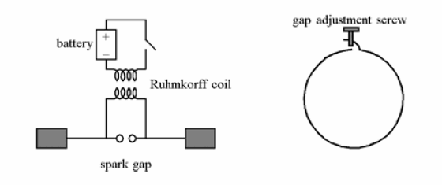
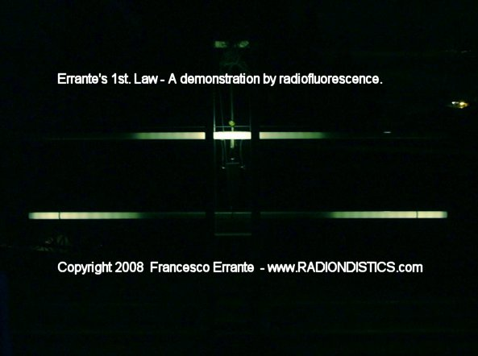
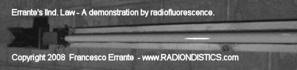
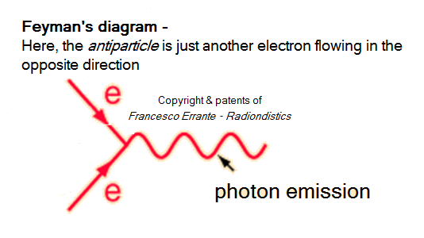

If you have a scientific interest in the physics of the
radio, you should browse this site as an e-book!
Hertzian Radiation, (better
known as radio-waves) : what it is and how it happens
by Francesco Errante
This is a brief presentation of Francesco
Errante's theorem on the physics of the hertzian radiation.
The hertzian radiation is the oldest, yet the
least common way to refer to radio-waves. It takes its name after
Heinrich Rudolf Hertz, the first physicist and engineer to have
demontrated the possibility of radio transmissions.
Ever since Hertz experiment and untill now, it was believed that energy would
travel all the way from the transmitter to the receiver while maintaining its
original form, hence, erroneously crediting electric signals with the
property of being able to travel in the empty space. Hertz, him-self, named
his own apparatus misterious emissions as "electric waves".
Subsequently, they were renamed as "electromagnetic waves".
First of all, it is paramount to comprehend that the hertzian
radiation is a natural phenomenon with an artificial origin.
Although, the hertzian radiation mirrors the nuclear reactions
photonic emission mechanism, it takes place at frequencies far lower than
those present in nature - eg: Sun's nuclear fusion and its radiations. See
energy and
radiation wavelength. In nature, radiations get generated by
matter's violent energy excitation which involves very high tempertures and
consequentially very high frequencies. Radiations of wavelenght longer than
those of the infrared rays spectrum, in nature, have no known practical
function, although, they still retain scientific relevance. In the
hertzian radiation, instead, the excitation is artificially imposed
by means of electric oscillation. Electric oscillation is a means to obtain the excitation of the
electric charges and it must not be confused with the hertzian
radiation it-self! Unfortunately, this is what has been happening untill
now.
The purpose of this study is to demonstrate that:
1) the mere oscillation of electric charges is
not the phenomenon at the origin of the hertzian radiation;
2) hertzian radiation can only take place following an energy
transformation, named radio-electric transduction.
Here is a brief introduction to the Author's
logical development of his ideas, concepts, observations, deductions and
patented devices leading to his
findings.
The method. Simplification is the main rule in the observation and understanding
of physical phenomena. Simplification, though, must not be confused with a
simplistic approach and it may require the development of tailor-made tools
and technology which can them-selves be far from being simple.
The stripping of a radiator to its bare essentials.
The � of a wavelength open dipole antenna, since its birth, has
always been considered to be the most simple available antenna and therefore
it has always been the specimen on which to conduct studies. Those studies,
however, were ill at birth as the open dipole is not an aerial as
simple as it looks. In addition, having considered the open dipole an
"elementary antenna" has shifted the focus of those studies away
from its essence and into its properties and its effects. Consequentially,
the theories about its intimate functioning are flawed and are responsible
for a number of further well radicated misconceptions. Moreover, this has
prevented from establishing how the hertzian radiation takes
place.

Hertz experiment. The apparatus for
radio-electric transmission and reception. Birth of the hertzian
dipole antenna, 1887.
By means of a particular radio-electric circuitry for the suppression of anyone of
the two branches of a � of wavelength open dipole, I have demonstrated,
once and for all, that the open dipole is not an elementary
antenna (by definition an elementary antenna is an aerial where the
condition of resonance and radiation cannot take place without the presence
of all its parts) but it is, instead, an "elementary array" of 2
elements, of a physical length equal to � of a wavelength each, which are
electrically arranged in a counterphase, while being fed in the middle of
them.
Once it has been established that the focus should be placed on the behavior
of a single element of physical length equal to � of wavelength, further
research has allowed me to come up with a truly "elementary radiator" to further distinguish
between the source of the radio-electric signal and the actual radiator.
The elementary radiator, infact, comprises a radio-electric
circuitry and a � of wavelength radiator which can be easily detached and
substituted by a dummy load (anti-inductive load), in order to conduct RF
measurement on the circuitry alone, while, radio-scopic observations of the
actual radiator emissions can be carried out by means of a particular
detector which exploits and, at the meantime,
demonstrates the phenomenon of the radioluminescence from secondary
ionization induced by hertzian radiation.
The radio-scopic observation by
radioluminescence.
By employing my detector, I have carried out
several non-intrusive radio-scopic measurements on the radiator over the full
spectrum of the shortwaves, anywhere between 1 and 30 MHz with an RF power
ranging from 100 mW to several kiloWatt.
The experiments I have deviced ed carried out,
clearly, demonstrate that:
1) the energy radiated by the radiator has a transitory
ionizing power;
2) by injecting a radio-electric signal into a properly
resonant radiator, the latter will always radiate energy as radio waves,
starting from the point which is always opposite to the point of feeding;
3) that the bulk of the energy is always radiated by the
region towards the end of the radiator..

Demonstration of the
Ist Errante's law by radioluminescence.
The image above shows the energy distribution on an half wave folded
dipole and on an half wave open dipole, both in a condition of
resonance, while being fed with two RF signals of equal amplitude and
wave length.
It is observed how on the first case the light emission reaches its
maximum intensity in the middle of the dipole while on the second case
the light emission reaches its maximum intensity towards the ends of
the dipole.
Ist. Errante's
law: any radio-frequency electric signal or any
radio-frequency electric impulse that is injected onto any electrical
conductor of any shape, will ALWAYS give origin to
hertzian radiation starting from the point opposite to that of
feeding.
Radio-electric measurements and radio-scopic
counterverification.
Conversely, further measurements have
allowed to verify the absence of hertzian radiation on conductors
(transmission lines) while in a progressive wave regime.

Demonstration of the
IInd Errante's law by radioluminescence.
The images above show the absence of hertzian radiation on a balanced
transmission line, in a progressive wave regime, while being runned
with a 1000 Watt RF signal. Either terminated on a reactive or a
non-inductive load.
Power: 1 KW RF
Test frequency on the dipole: 25,5 Mhz
Test frequency on a dummy load: from 1.8 MHz to 30 Mhz in 100 KHz
steps Go to the
experimental verification page
IInd. Errante's
law: any radio-frequency electric signal or any
radio-frequency electric impulse that is injected onto any electrical
conductor of any shape properly terminated onto a load having an
impedance value equal to that of its source, will NEVER give
origin to hertzian radiation.
Author's deductions.
What has just been said, reasonably, leads to affirm that the
hertzian radiation takes place whenever charges belonging to a first
wavefront having flowed forth along the radiator all the way up to its end, return backwards and
hit a new forthcoming wavefront giving origin to collisions with scattering of particles,
most likely to be photons, having the same frequency and wave form of the
radio-electric signal that has generated it. As it is impossible for the new
particles to travel faster than light, the particles will acquire more mass
instead. (if particles could travel faster then light, their
emission would, inevitably, end-up generating shorter wavelength radio
signals)
This mechanism is, therefore, a form of controlled or limited
standing wave regime, if it happens within the length of the radiator
then we have resonance, if it exceeds the length of the radiator we
have a random standing wave regime with less or no
radiation.

In the hertzian radiation mechanism, the
antiparticle is nothing else than an electron flowing back in the opposite direction
to the one it was initially injected from. Hence, the minus sign of one of the two Dirac's equation solutions indicates the negative direction of the particle and not a negative charge of it!
Errante's radio-electric transduction mechanism is fully consistent with
Prof. John Archibald Wheeler's own intuition as aknowledged byRichard Feynman
in his Nobel lecture.
Moreover, evidence shows that the law of conservation of energy holds true,
while leaves no room for keeping on theorizing about the positron and the antimatter.
Conclusions:
according to this Author's findings, the physical mechanism responsible for the
generation of the hertzian radiation is different from
what it was previously theorized and accepted as true.
The forecast of a concatenation between the electric field and the magnetic one, as
offered by Maxwell's equations, describe the electric and the magnetic fields engaged in an endless cycle of mutual creation.
This interpretation bears a fundamental error which lies in the fact that the concatenation
between fields was thought to be in the fashion of an overlaying and NOT in a relay-race like full-cycle progression as it happens to be, instead.
In the light of this Author's findings, it can be affirmed that there is no such a thing as an
electromagnetic wave, an electromagnetic field or an electromagnetic signal.
There are, instead, photonic emissions (radio waves) that follow the same
wave form and frequency of the signals that have generated them, capable of
inducing electromotive forces onto the matter with the same frequency and wave form.
As a direct consequence of this findings, when it comes to radio-electric transduction, the concept of electromagnetic induction does no longer hold true, either.
Accordingly, the mechanism by which an electrical conductor (ie: radio antenna) gets affected by the hertzian radiation
must be different from what it was previously thought too and everything points to nothing else than a simple photovoltaic effect,
just as observed by Hertz and Hallwachs in the ultraviolet radiation spectrum.
The transmission and reception of a
radio-electric signal, from a point to another of the empty space, is
not, therefore, a simple transfer of energy in the same form and the
radio-frequency electric signals do not have the property of travelling
in the empty space.
Errante's principle on the
radio-electric transmission
For a given quantity of energy, in the form of a radio-frequency
electric signal, to flow from a point to another of the empty
space, to be later reproduced in its original form, it is
necessary that the said energy undergoes at least two
transformation:
1st from radio-frequency electric
signal to hertzian radiation;
2nd from hertzian radiation back to
radio-frequency electric signal.
The minimum number of two transductions it's what it takes in
the case of a direct line-of-sight radio propagation.
This particular phenomenon involving an
energy transformation of a radio-frequency electric signal into a
radio-frequency radiation and viceversa, is called radio-electric
transduction. The radio-electric transduction is a
spontaneous phenomenon where an ordained form of energy gets
transformed into a disordered one with a different form and viceversa.
This transformations can be repeated an infinite number of times but
with regard to energy loss it is an highly disadvantageous exercice.
The devices capable of enhancing the
radio-elettric transduction, are defined asradio-eletctric transducersand
are commonly known as "radio antennas".
Please, take a
look at our new all-in-one apparatus for the physics of the hertzian
radiation and the radio-electric transducers. Here !
Material is governed by the Copyright, Designs and Patent Act.
No reproduction, in whole or in part, without written permission.
Copies of these documents made by electronic or mechanical means, including
information storage and retrieval systems, may only be employed for personal use.
All rights reserved.


 Please, take a
look at our new all-in-one apparatus for the physics of the hertzian
radiation and the radio-electric transducers.
Please, take a
look at our new all-in-one apparatus for the physics of the hertzian
radiation and the radio-electric transducers.